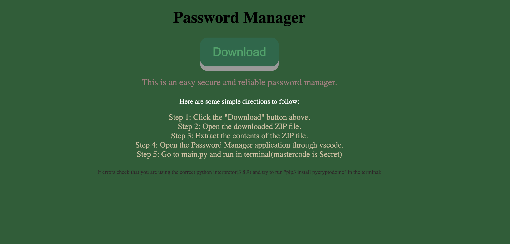

About Me
My name is Rohan Senapati, and my contact information can be referenced by my email, senapati2539@mydusd.org. I live in Dublin, CA. As a computer science and mathematics enthusiast, the prospect of taking AP CSP and AP CSA excites me. I believe this environment will not only deepen my understanding of computer science concepts but also allow me to explore various fields within science in a practical, engaging manner. Furthermore, the opportunity to work in a team with like-minded peers and my teachers is something I look forward to, as it will enhance my collaborative skills and expose me to diverse perspectives.
I see this as a platform to develop my critical and analytical thinking, problem solving, computer, and communication skills, which are crucial for my future academic and career goals. Lastly, I am eager to step out of my comfort zone, take on new challenges, and gain real-world experience. I believe that taking AP CSP and AP CSA will be a significant step in my journey of personal and professional growth, allowing me to gain invaluable skills and experiences while contributing positively to the world of technology that inspires learning and innovation.
Resume
Career Objective : - Software Engineer
Languages Used : -
Python
HTML
CSS
Javascript
Skills : -
creativity
critical thinking
problem solving
Coding Background
| Name |
ed-tech company |
Course Type |
Languages Learned |
| Rohan Senapati |
Byjus |
Coding |
HTML, CSS, JS |
Knowledge Gained =>
HTML, CSS, JS, and their interconnectednes
training AI models
neural networks
Game Design
Intersts and Extracurriculars : -
Beyond coding, I pursue many other passions. =>
playing the piano
table tennis player
taekwondo athlete
video game enthusiast
Accomplishments (Beyond Coding) : -
second degree black belt
4.0 GPA, honor roll in middle school
President's Volunteer Award
760 Math SAT in 8th grade, recognition and tutoring opportunities received
↓Link to Resume↓
Projects
Project 1
3.1.3 & 3.2.1 : Combo Menu
February 2024 - March 2024, Computer Science Essentials
This program, in addition to 3.1.3, enables the user to add or remove items from their list, choose how many of each item they want, and display the order selections in a list at the end of the program.
I found this continuation, to be much harder than 3.1.3.
Simply continuing the previous project made the code harder to read, and unmanageable.
I struggled a lot, which led me to make use of defining my methods, and simply calling them in other sections of the code.
This led me to modularize the code and restart from the very beginning, with 3.1.3 as only a reference.
Accessibility, reusability, and maintainability were all rewards that I reaped from the modularized code.
Changes I made include the use of remove and append functions, and parameters for my own, defined functions.
I actually optimized the use of lists to my advantage, so that information about food items, costs, and quantity will be easier to track.
This program is for anyone who can access Github, likes to code, and more importantly play around / try to break the code, and understand it.
Project 2
Entrepreneurship Project - Password Manager
March 2024 - May 2024
Out of all my projects throughout this year in my CSE course, this one was the game changer. I consider this as the hardest project that my team and I have done. We used a divide and conquer approach, where I did the entire backend development, and the others did frontend and documentation. We wanted to do something cool, a password manager, and had soon done tons of research. We soon realized that it would be difficult, as we had little to no experience with cybersecurity. There was no straight road to completing this project. When one of my partners and I made progress, we sometimes forked the path due to errors, forcing us to start from scratch. We persisted, and I eventually found the algorithm that is secure and easy to implement, AES. Since I was able to use this algorithm, we had to discard my partner’s code for this project despite the effort into the research he put. I managed to created a functional password manager that stores and retrieves user passwords, while the rest of the group did an exceptional job with the website, documentation, and slideshow. Together, as a team, we made our password manager a product that is consistent and easy to use, ensuring reliable performance, and allowing for user satisfaction.
